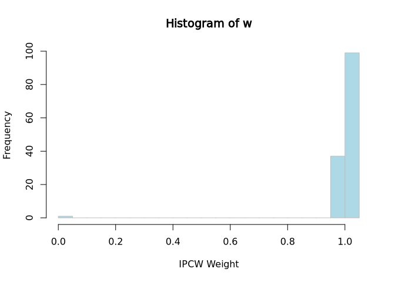

IPCW Jackknife Methods for Standard Errors in Survival Prediction
Provides functions for fitting binary classification models with inverse probability of censoring weights (IPCW) to estimate survival probabilities, and implements jackknife resampling methods for unbiased prediction error estimation.
The documentation is available at https://iden-project-uas-darmstadt.github.io/IPCWJK/
Installation
You can install the development version of IPCWJK like so:
# With remotes
remotes::install_github("IDEN-Project-UAS-Darmstadt/IPCWJK")
# With pak (recommended for speed)
pak::pkg_install("IDEN-Project-UAS-Darmstadt/IPCWJK")Releases of the library can be found here.
Examples
IPCW weights can be calculated with the ipcw_weights function.
library(survival)
tau <- 100
df <- veteran[, c("time", "status", "karno", "age")]
newdata <- data.frame(karno = c(80, 70), age = c(40, 50))
# Calculation of IPCW weights at tau
library(IPCWJK)
w <- ipcw_weights(df, tau, time_var = "time", status_var = "status")
hist(w,
breaks = 30,
xlab = "IPCW Weight", col = "lightblue", border = "grey"
)
For survreg models with a log-logistic distribution and logitIPCW we provide convenient access to Wald confidence intervals based on the delta method on the logit scale.
# Fit a log-logistic survival model
survreg_fit <- survreg(Surv(time, status) ~ karno + age,
data = df,
dist = "loglogistic"
)
# This provides you with an Wald CI on the logit scale:
pred_fun <- deltamethod_from_model(survreg_fit, tau = tau)
pred_fun(newdata)
#> prediction lower upper se
#> 1 0.6087168 0.4506212 0.7668123 0.08066101
#> 2 0.4815100 0.3795966 0.5834235 0.05199666
# Fit a logitIPCW model
library(mets)
logipcw_fit <- logitIPCW(Event(time, status) ~ karno + age,
time = tau,
data = df
)
pred_fun <- deltamethod_from_model(logipcw_fit, tau = tau)
pred_fun(newdata)
#> prediction lower upper se
#> 1 0.7406860 0.5672413 0.9141306 0.08849216
#> 2 0.5808678 0.4513883 0.7103472 0.06606092Models using IPCW are also available. For these, we provide the jackknife-based estimation of the standard error and Wald confidence intervals based on the delta method on the logit scale.
# IPCW Logistic Regression
fit <- ipcw_logistic_regression(df,
tau = tau, time_var = "time",
status_var = "status"
)
predict(fit, newdata)
#> prediction lower upper se
#> 1 0.7477355 0.5387945 0.8826380 0.08960564
#> 2 0.5819723 0.4455359 0.7069205 0.06821779
# IPCW XGBoost Classifier
fit <- ipcw_xgboost(df, tau = tau, time_var = "time", status_var = "status")
predict(fit, newdata)
#> prediction lower upper se
#> 1 0.7654250 0.5621175 0.8924056 0.08545969
#> 2 0.5937184 0.4579942 0.7164942 0.06741503Development
Restore the development environment with:
renv::restore()Then use anything available in the devtools package to develop the package.
library(devtools)
document() # to update documentation and roxygen functionality
load_all() # to load the package functions for development
build_readme() # to update the README
test() # to run tests
check() # to check the package
covr::package_coverage() # to check code coverage
styler::style_pkg() # to style the code
lint() # to check the code for linting issues